Service Request
You can quickly respond to any service request in accordance with relevant procedure after it is recorded.
Managing Service Requests
Following is how to manage service requests with Service Request Service.
1. Managing Service Requests
You can in advance designate the Assignee and write description of an issue which may be requested.
-
Click the [Create Type] button. Or, click the [Modify Type] button to edit pre-existed service requests.
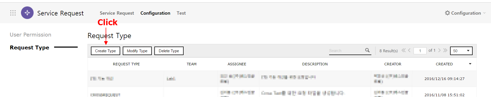
-
On the “Create Request Type” pane, enter the information about a service request you want to newly add to.
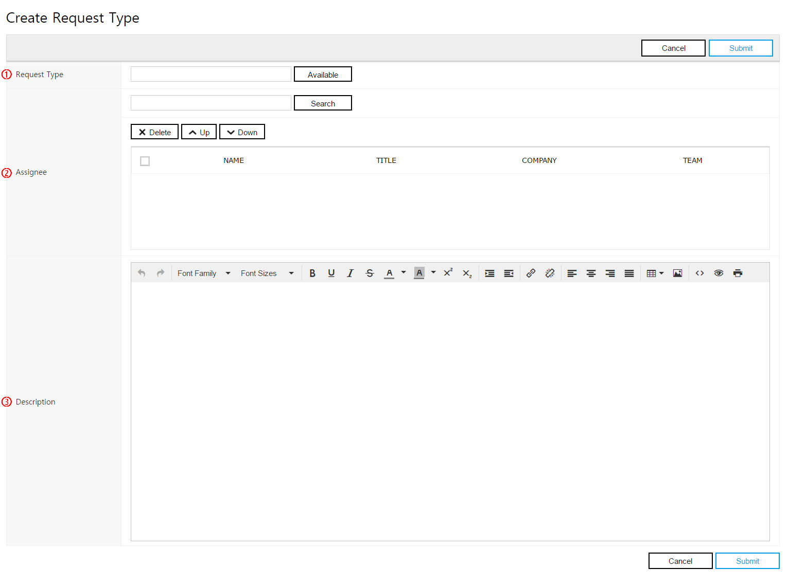
No Name Required Description ① Request Type Required Enter the name of a service request you want to newly create. ② Assignee Required You can designate the primary Assignee of a service request.
Multiple Assignees may be designated.
The person on the top of Assignee list is to be designated as the primary Assignee.③ Description . Write description about a service request. -
Click the [Submit] button to save entries. Then the Request Type list shows that a new service request has been added.
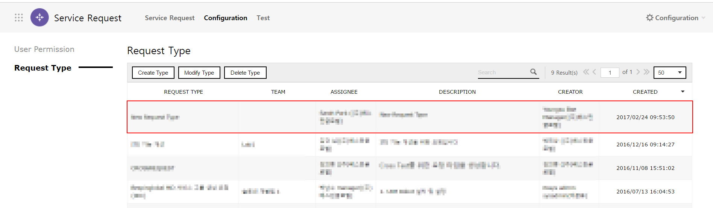
2. Requesting Service
You can make a new service request to the other member.
-
On the “All Request” pane, click the [Create New] button.
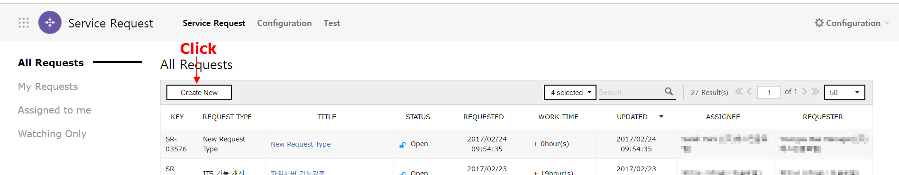
-
On the “New Service Request” pane, enter details of a service which is to be requested.
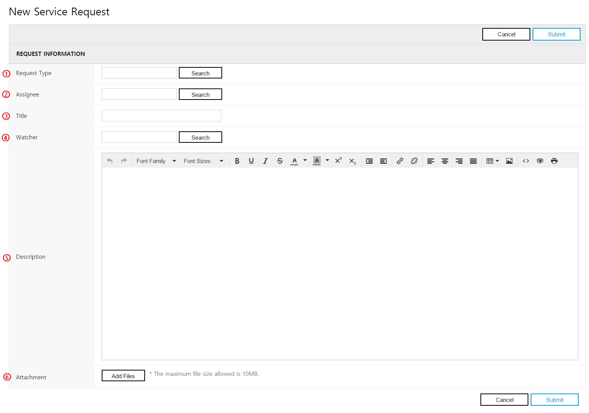
No Name Required Description ① Request Type Required Select the type of a service you want to request.
If you click the [Search] button, the list of issues available to be requested will be shown. Then select one you want to request.② Assignee Required Select the Assignee you want to request service.
Its default value is the person designated on Request Type.
You can click the [Search] button to change the Assignee.③ Title Required Enter the title of a service you want to request. ④ Watcher . Designate a Watcher of a service which is to be requested.
By clicking the [Search] button, you can designate multiple Watchers.
Watchers receive a notification via e-mail if the service request has been changed.⑤ Description . Write description about a service request. ⑥ Attachment . You can upload a file related to a service request.
Multiple files may be uploaded. -
Click the [Submit] button to submit the service request. On the “My Requests” pane, you can see the list of services you have requested. Also, the Assignee of a new service request will receive a notification for the submission via e-mail.
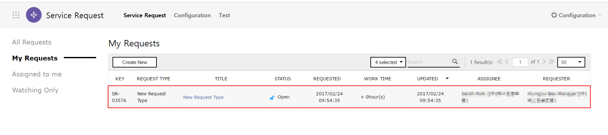
3. Service Requests to Me
3.1 Service Request Assigned to You
You can check the list of services which others have requested to you and can process them.
-
On the “Assign to Me” pane, check the list of service requests which have been submitted to you. You can click a requested service to check its details.
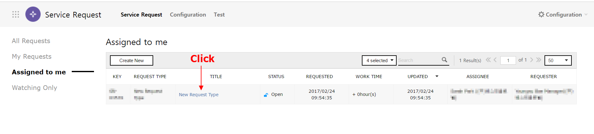
-
Check details of a requested service and process the service request.
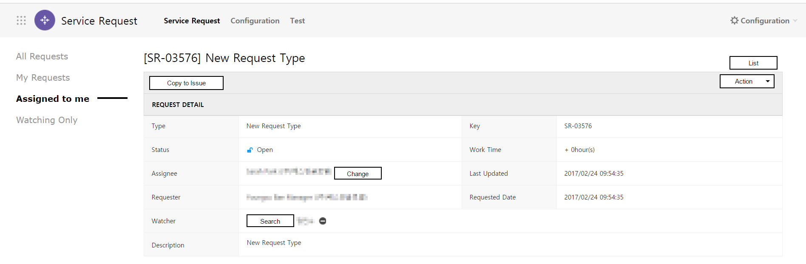
3.2 Service Request for which You Are to Be Notified
You can check content of a service request for which you are designated as a Watcher.
-
On the “Watching Only” pane, you can check a service request for which you are designated as a Watcher. Click it to check its details.

-
You can check details of a service request for which you are designated as a Watcher.
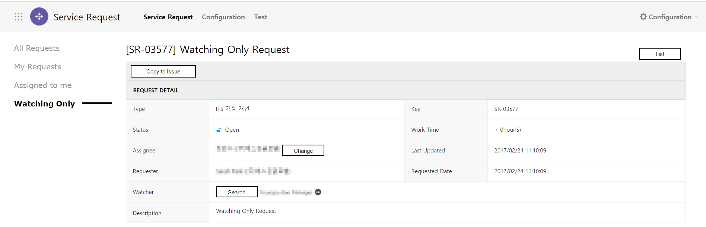
3.3 Recording Process Status of Service
You can record process status of a service. When process status is changed, a notification will be sent to the Assignee and Watcher via e-mail.
-
Click the [Action] button to change process status of a requested service.
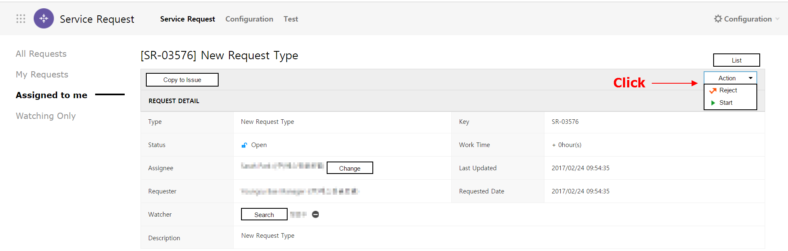
Status Description Open Means that a service request has been submitted, but its issue does not begin to be undertaken yet. In-progress Means that the Assignee is dealing with a requested service. Resolve Means that the Assignee has fulfilled the process for a requested service. Reject Means that the Assignee has rejected the process for a requested service. -
On the “Status” item, you can check that status of the service has been changed.

3.4 Recording Requested Service as Issue History
You can copy a requested service into Project Service in order to keep it as Issue History of the Project/Team.
-
Click the [Copy to Issue] button.
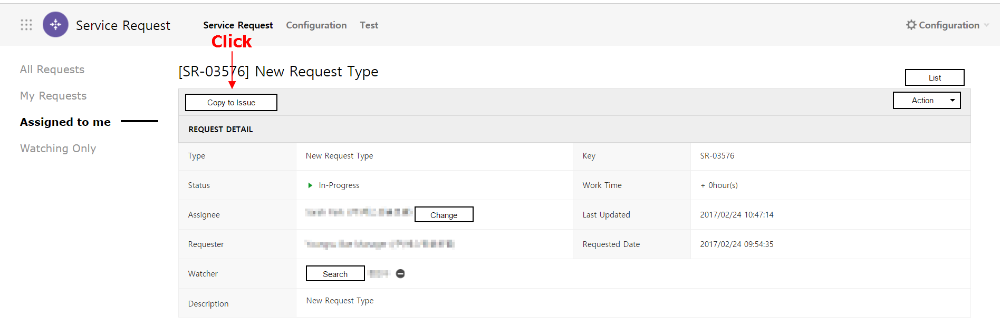
-
Content of a requested service is copied to the “Create Issue” pane of Project Service. When you register this issue, you can select the project/team on which this issue is to be registered.
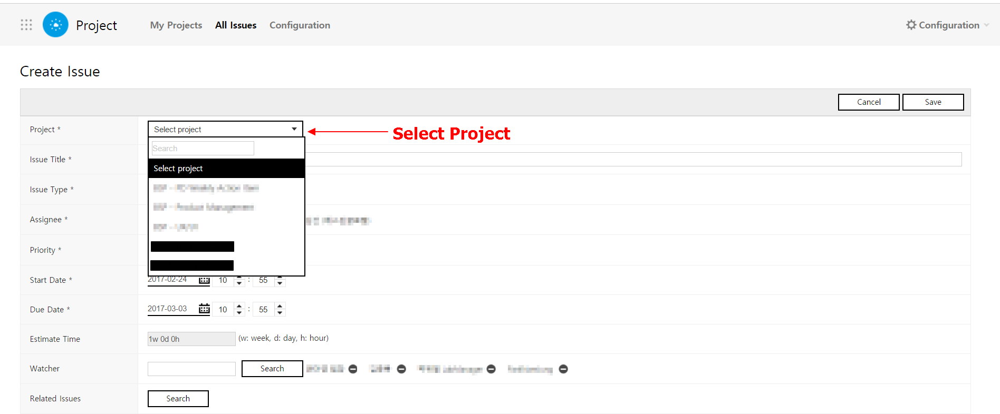
4. Searching Service Request History
You can search the Service Request and its details you want to check by setting conditions and entering keywords.
4.1 Searching by Conditions
-
Select a condition you want to search. Click the [Status] button, then a drop-down menu appears to show available conditions for search.
-
Select 'Status'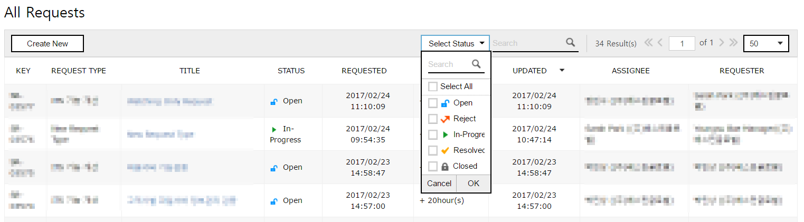
-
-
Click the [OK] button of the drop-down menu.
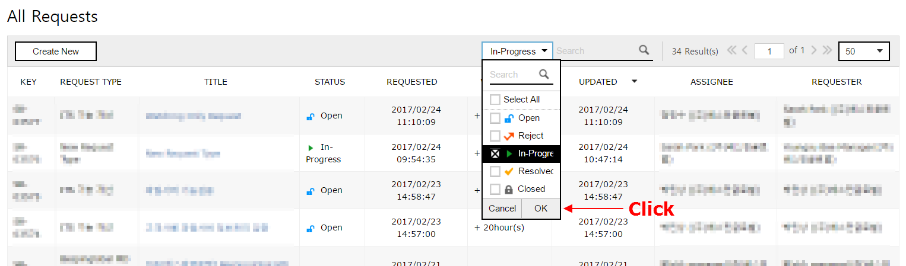
-
You can check the search result with the selected condition on the Service Request list.

4.2 Searching by Keywords
-
Enter a keyword you want to search on the search box and click [Search] button or press [Enter].
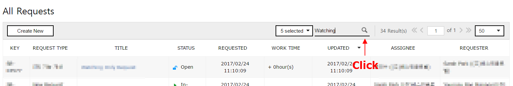
-
The results which title is identical to the keyword will be shown on the list. Texts identical to the keyword will be highlighted.
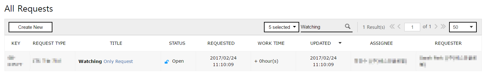